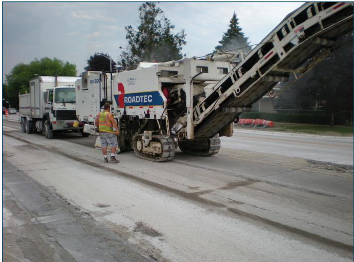
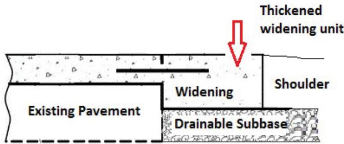
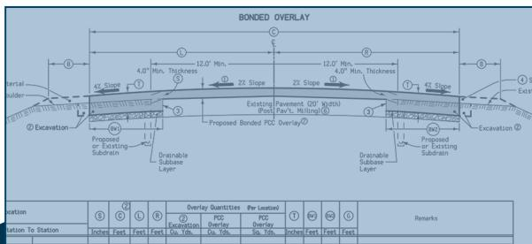
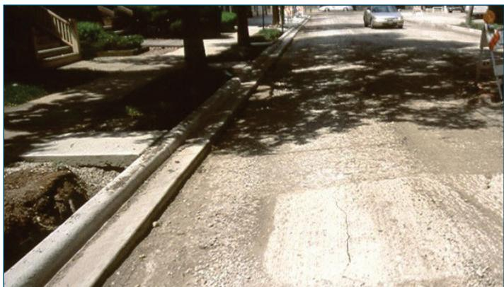
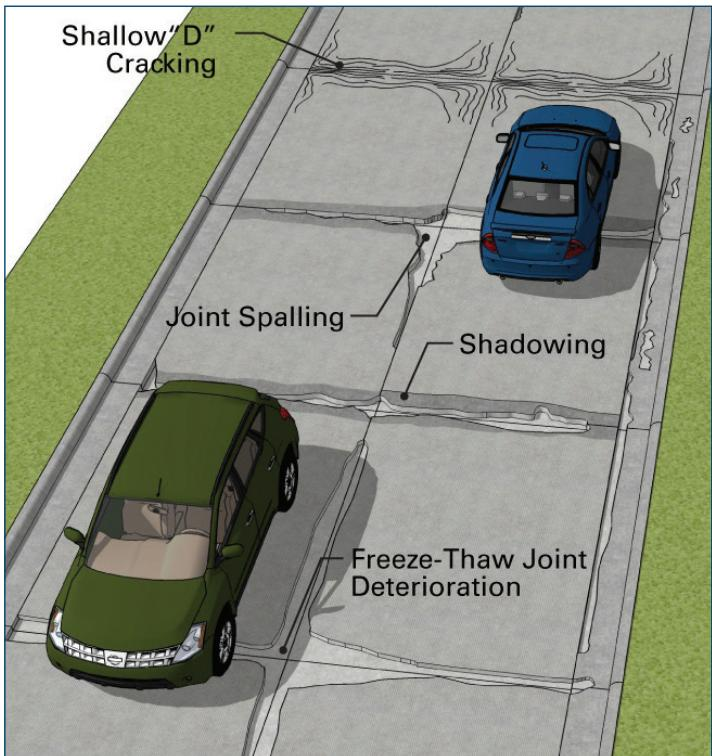
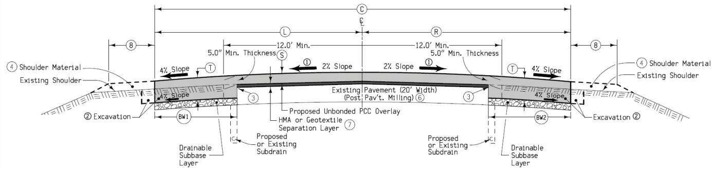

Concrete Overlay Construction Procedures
Concrete Overlay Construction Procedures are a systematic framework created to rehabilitate existing pavements by adding an additional concrete layer when the underlying structure retains sufficient capacity, thereby avoiding full‑depth reconstruction and preserving traffic flow [4][6][7][8][9][10][11]. The process guides practitioners through comprehensive pre‑construction evaluation—including pavement history, core testing, and drainage analysis—followed by design of overlay thickness, joint layout, edge support, and material selection using standard cement‑based mixes that meet conventional acceptance criteria [2][4][8][9][10]. By coordinating staged construction, traffic control, surface preparation, precise machine set‑up, timely curing, and rigorous quality‑control inspections, the procedures deliver a durable, service‑life‑oriented pavement while minimizing elevation impacts, equipment‑access constraints, and overall reconstruction costs [4][6][7][8][10][11].
Sources (11)
Purpose and applicability
Concrete overlay construction procedures were created to fill the gap left by the absence of a unified, systematic approach for rehabilitating existing pavements with an additional concrete layer. The framework guides practitioners through substrate evaluation, thickness and joint design, drainage and support considerations, and staged construction that can keep traffic moving, thereby avoiding the costly elevation increases that would otherwise demand extensive adjustments to guardrails, curbs, signage, drainage and other non‑pavement features. It also removes equipment‑access problems caused by existing curb geometry and reduces overall reconstruction expense while delivering a durable, service‑life‑oriented pavement. [4][6][7][8][9][10][11]
The following figure illustrates the initial milling step required to prepare the existing surface for such an unbonded overlay.

Road milling machine removing existing pavement surface. [11]A large white Roadtec cold planer is actively grinding the road surface, with a conveyor belt extending to load debris into an adjacent dump truck. This milling process removes distressed pavement material to allow for the construction of a concrete overlay that returns the pavement to its original elevation, avoiding costly adjustments to existing features like curbs and guardrails.
[4] — Advantages and Disadvantages o… (pp. 37–39); [6] — Ch. 9 (p. 264); [7] — App. A (p. 35), Concrete Overlays on Asphalt T… (p. 16), Results (p. 33), Solution (p. 33); [8] — Ch. 1 (pp. 15–25), Ch. 3 (pp. 28–36), Ch. 7 (pp. 67–77), Ch. 8 (pp. 80–85), App. A (pp. 93–111), App. D (pp. 136–145); [9] — 5. Condition assessment profile (pp. 9–13), Design Lessons Learned (p. 7), Getting Started (p. 8), Purpose (p. 7); [10] — Construction (p. 11), Construction Considerations (p. 31), Fixed Elevation Points (p. 14), Overview (p. 48), Placement of Concrete Parking … (p. 38), Purpose and Scope of This Guide (p. 10), Raising Existing Curb and Gutt… (p. 31); [11] — 2. Overview of Thin Concrete O… (pp. 28–29)
“Concrete overlay construction procedures are appropriate when the existing pavement retains sufficient structural capacity to act as a substrate and only surface renewal is required. The guides note that “Concrete overlays on existing asphalt trails can be a successful method of major rehabilitation,” and that “In many cases, the asphalt can serve as a uniform support base for the concrete pavement.” Similarly, for existing concrete pavements it is “It is recommended to leave 4 in. of the existing concrete overlay as a supporting layer beneath the new concrete overlay.” The overlay thickness should be predictable within about ±2 in., because “a concrete overlay will raise the profile grade, which has many potential geometric and cost impacts on existing roadway and roadside features,” but when the increase can be accommodated—by back‑filling edges and restoring shoulders (“The increase in profile elevation will require material to backfill the edges and bring the shoulders back up to grade”)—the method is viable. Low‑traffic or rural settings, where “elevation changes impose limited impact on adjacent structures,” also favor overlay use. The procedure works well for narrow PCC roadways that have been temporarily widened with asphalt (“Some state primary and county roadways were originally constructed with Portland cement concrete (PCC) at a narrow width of 18‑ft to 20‑ft.” “In most cases, these roadway sections are good candidates for a concrete overlay.”) and when modern equipment can keep traffic flowing (“Concrete overlays can be effectively constructed while roadways are open to traffic” using “stringless and zero-offset pavers allows more flexibility in how traffic is addressed during paving operations”). Parking‑lot rehabilitations that require staged work also meet the criteria (“Rehabilitation of existing retail and commercial parking lots for businesses requires the use of a project schedule,” “Before construction of the overlay, the existing pavement should be clean and dry”).
Conversely, another method should be selected when any condition would compromise performance or create prohibitive costs. Full‑depth repair is required if “If the existing pavement has fatigue-related alligator cracking or potholes, then a full-depth repair is needed to correct potential subgrade conditions.” When the overlay thickness would cause unacceptable vertical clearance issues—“vertical profile transitions at bridge approaches always require full-depth pavement removal and replacement”—or when the shoulder cannot provide adequate support (“If the shoulder is unpaved and offers a significantly lower level of support than the existing pavement, it is necessary to strengthen or reconstruct at least the portion of the shoulder that will underlie the overlay”), a full‑depth reconstruction is preferred. Severe material distress also mandates removal: “Full reconstruction is the most invasive and least desirable scenario in terms of cost- and resource-intensiveness, but this option may be necessary for overlays exhibiting material-related distress or extremely poor condition traced to the underlying pavement structure.” High traffic‑control costs or safety concerns dictate closure with detours (“However, there are increased traffic control costs associated with this type of construction and these costs need to be considered and weighed against the benefits of closing the road during construction,” “consideration should be given to closing sections of the roadway with local detours as an alternative to constructing the overlay under traffic conditions”). Curb conditions that are deteriorated or obstructed by utilities require alternative treatment: “the condition of the curb should be evaluated and, if the concrete is showing signs of deterioration, it should be removed and replaced.” When “when utility poles and other obstructions are in close proximity to the back of the existing curb, leaving the curb in place may limit the use of conventional slipform paving equipment,” removal or a full‑depth saw cut may be needed (“a full-depth saw cut and traditional excavation methods are preferable to minimize disturbance of materials on the edges of the roadway”). Finally, economic analysis must support the overlay; if a life‑cycle cost study shows no advantage—“If the existing surface cannot reliably support an overlay or the economic comparison does not favor it, full-depth removal and replacement of the asphalt should be pursued,” “The initial cost of the concrete overlay option was about 30 percent lower than that of the remove-and-replace option”—otherwise removal and replacement should be pursued. In cases of uneven deterioration, a targeted solution is available: “A lane-specific inlay alternative provides the option to replace an overlay that has experienced inconsistent deterioration between lanes.” A feasibility study should also be performed (“A feasibility study should be performed to determine if an overlay is an economically beneficial alternative”).
Thus, overlays are chosen when existing pavement is sound, elevation impacts are manageable, traffic can be maintained, and costs are favorable; otherwise full‑depth repair, reconstruction, or alternative construction methods are recommended. [4][7][8][9][10][11]
[4] — Advantages and Disadvantages o… (pp. 37–39); [7] — App. A (p. 35), Concrete Overlays on Asphalt T… (p. 16), Solution (p. 33); [8] — Ch. 1 (p. 25), Ch. 7 (p. 74), Ch. 8 (pp. 80–81), App. A (pp. 109–111); [9] — 5. Condition assessment profile (pp. 9–13); [10] — Construction (p. 11), Overview (p. 48), Placement of Concrete Parking … (p. 38); [11] — 2. Overview of Thin Concrete O… (pp. 28–29)
Required inputs
The guides agree that a concrete overlay uses the identical cement‑based inventory employed for a new concrete pavement, employing “the same materials, equipment, and processes as a concrete pavement placed upon a base course.” Consequently, the mix must satisfy the standard acceptance criteria; “thickness, strength, air content, combined gradation, and smoothness” are verified through normal testing. Successful placement also depends on site preparation: “the existing pavement should be clean and dry to provide for uniform support conditions and to improve the bonding condition,” which is achieved by water‑blasting (or sand‑blasting when necessary). The concrete itself may be a standard ready‑mixed batch; “the overlay mix can be the same as that used for new parking‑lot slabs; a smaller maximum aggregate size may be selected when improved finishing is required, provided the mixture retains sufficient free mortar.” Together these requirements define the material selection, mixture properties, and substrate conditions essential for concrete overlay construction. [8][9][10]
The following figure illustrates a thin bonded overlay applied to structurally sound concrete pavement.
 Deteriorated longitudinal crack in a concrete overlay [8]
Deteriorated longitudinal crack in a concrete overlay [8]
The image displays a close-up view of a paved surface featuring a prominent, darkened vertical fissure running longitudinally along the lane. This visual evidence illustrates a “Deteriorated longitudinal crack” within a bonded concrete overlay structure. The presence of such cracking highlights the structural integrity requirements for overlays, as these systems must be placed on existing pavement that is “in good structural condition” to function effectively.
[8] — Ch. 1 (pp. 18–25), Ch. 3 (pp. 28–36), Ch. 7 (pp. 74–77), App. A (pp. 109–111), App. D (pp. 139–141); [9] — 5. Condition assessment profile (p. 9); [10] — Construction (p. 11), Construction Considerations (p. 31)
The design of a concrete overlay is driven by a systematic pre‑construction evaluation that includes pavement history review, visual examination, core extraction and laboratory testing, and optional material‑related, subsurface or surface‑texture analyses. The data gathered define the required overlay thickness, joint spacing, edge support provisions, drainage needs, tie‑bar placement, and the construction tolerances.
Joint spacing directly influences slab thickness; for example, reducing control‑joint spacing from fifteen feet to twelve feet permits a one‑inch reduction in minimum thickness (from 8½ in. to 7½ in.). When an overlay is placed on existing concrete pavement the COC‑U approach calls for retaining at least four inches of the old slab as a supporting layer, and any grade increase is accommodated by milling the surface to limit elevation changes.
All system components must be defined before construction: overlay thickness, panel dimensions, bond condition between new and existing pavement, joint configuration, edge support, and concrete‑mix material properties. Conventional cement, supplementary cementitious materials, aggregates, water and admixtures are used; accelerated mixes may be selected when early strength is required.
Dimensional criteria and acceptance limits include overlay thickness, compressive strength, air content, aggregate gradation and surface smoothness. A tolerance of ±2 inches is applied to the profile‑grade line and to machine‑control thickness control. Vertical transitions are required at the beginning and end of overlay sections, at bridge approaches and under structures; taper ratios are 40:1 for speeds ≥45 mph and 25:1 for speeds <40 mph.
Edge joints must be kept out of wheel paths and should not extend more than 12–18 inches beyond the existing lane edges unless a shoulder provides comparable support. Overlay extensions onto shoulders are limited to the same distance; within that limit longitudinal joints and reinforcing may be omitted, but any joint must remain outside wheel paths.
Tie‑bar detailing specifies No. 4 deformed bars as the maximum size for widening sections with a minimum concrete cover of 2 inches above each bar. For overlays ≥5 in thick tie bars are placed at mid‑depth; for thinner sections they are fastened to the existing surface, and an isolation (butt) joint without tie bars is required when thickness is <5 in.
Construction clearances and machine‑control tolerances require accurate equipment capable of achieving the ±2‑inch thickness tolerance. Lateral clearances for stringless paving range from 2–3 ft, while traditional stringline work requires 6–10 ft. The paver track width must be at least 2.5–3 ft and stringline spacing 1–1.5 ft; incremental encroachment reductions of 1 ft up to a total of 2 ft are common.
Pre‑construction testing verifies material properties (slump, air content, compressive strength) on trial mixes and confirms the detailed existing‑pavement survey—whether performed by conventional line staking or LiDAR/drone scanning—to satisfy all dimensional tolerances (taper ratios, cover, joint locations, clearances). The survey provides the optimized profile‑grade line that governs thickness control.
Edge preparation requires existing curbs or gutters to be cleaned—typically by water blasting—to achieve a “clean and effectively dry” condition. Milling stops at the base of any curb so the overlay can be placed to full thickness; deteriorated curb concrete must be removed and replaced, serving as an acceptance test. In thin‑overlay work, the presence of close utilities may restrict conventional slipform equipment, necessitating alternative placement methods.
Test‑strip programs on unreinforced overlays have shown that nominal thicknesses can be reduced (e.g., from 5 in to 4½ in) and tie bars at construction joints eliminated, retaining reinforcement only as a perimeter concrete ring. End sections may be feathered to near‑zero thickness or recast full depth where grade changes demand.
Support and edge preparation also mandates shoulders of at least 2 ft width with a granular base minimum 6 in thick treated with calcium chloride; edge drop‑offs are limited to a 1:1 fillet, otherwise granular shoulders are installed before final finishing. [2][4][6][8][9][10][11]
The figure below illustrates how to increase the thickness of the widening area.

Cross-section of a thickened widening unit adjacent to existing pavement and shoulder. [9]The figure displays a cross-sectional view of a pavement structure where the ‘Widening’ area is constructed with increased depth compared to the main lane, labeled as a ‘Thickened widening unit’.
[2] — 1. Introduction (p. 68); [4] — Advantages and Disadvantages o… (pp. 37–39); [6] — Ch. 9 (p. 264); [8] — Ch. 1 (pp. 18–25), Ch. 3 (pp. 34–36), Ch. 7 (pp. 67–77), Ch. 8 (p. 85), App. A (pp. 109–111), App. D (pp. 137–145); [9] — 5. Condition assessment profile (pp. 9–13), Design Lessons Learned (p. 7), Getting Started (p. 8); [10] — Construction Considerations (p. 31), Overview (p. 48); [11] — 2. Overview of Thin Concrete O… (p. 28)
Equipment and personnel
Concrete overlay projects rely on pavement engineers, with an emphasis on seasoned professionals who have the technical proficiency to manage design and construction complexities, supported by less‑experienced practitioners who must acquire the basic knowledge presented in the guide. The crew composition includes a traffic‑control team that shifts control to the left lane and closes the right lane to traffic, a surface‑preparation team responsible for repairing and readying the pavement for the separation layer or overlay, paver operators who adjust a conventional paver to keep the stringline within 1–1.5 ft of centerline and maintain a track width of 2.5–3 ft, make incremental encroachment reductions up to 2 ft through machine adjustments, and reduce speed when clearance to traffic is limited, and a bull‑float crew that operates exclusively from the outside shoulder. [8]
[8] — Ch. 1 (p. 15), App. D (pp. 139–141)
Work sequence
Before concrete overlay construction can begin, the guides require that a comprehensive pre‑construction program be completed. This program starts with an evaluation of the existing pavement structure and its suitability for an overlay: agencies must avoid applying a new pavement template without first determining whether the existing base or sub‑base layers can serve under the new surface pavement, and the existing pavement must be evaluated and the proper type of overlay chosen. A thorough review of the existing asphalt (or concrete) includes a pavement history review, performance goals, visual examination, core analysis, and any optional analyses; if fatigue‑related alligator cracking or potholes are present, full‑depth repairs are required. A feasibility study or an approved life‑cycle cost analysis comparing full‑depth replacement with an overlay must be performed to confirm economic benefit and authorize the overlay option.
High‑level scoping questions about the type and condition of the pavement are answered, and support conditions such as shoulder widths, widened sections, and rumble strips are carefully documented. A preliminary estimate of required overlay thickness (±2 in.) is calculated to decide whether milling or profile‑grade adjustments are needed, and the determination of pre‑overlay repairs, material selection, bond or restraint assumptions, edge‑support design, joint layout, reinforcing steel, and longitudinal joint placement are all addressed in a complete design package. The design must also incorporate drainage provisions, tie‑bar placement for widenings, adequate thickness for widenings, and proper longitudinal sawcut locations.
Accurate surface modeling requires a detailed survey or LiDAR scan of the existing pavement to develop the profile grade, and all existing plan and profile drawings are reviewed for vertical constraints such as overhead clearance, barriers, superelevation, and drainage. Utility structures must be isolated with separation joints, and any low‑support shoulders must be strengthened to match existing support levels.
Before construction starts, a full set of submittals—including approved mix designs, material specifications, equipment lists, quality‑control procedures, construction schedule, delivery plans, measurement methods, and payment arrangements—must be completed and approved. The project schedule and staging plan must be coordinated, traffic control provisions prepared (e.g., shifting traffic to the left lane and closing the right lane), and the existing pavement surface—including curb and gutter—cleaned and dried to provide uniform support and a reliable bond. Simple water blasting or sand blasting may be used, and the surface should be on the dry side of saturated‑surface‑dry. If the existing curb is deteriorated or obstructs equipment, it must be inspected, removed (by full‑depth saw cut or milling), and replaced as needed.
Only after all these evaluations, designs, analyses, surveys, submittals, and site preparations are finalized can concrete overlay construction commence. [4][6][7][8][9][10][11]
[4] — Advantages and Disadvantages o… (pp. 37–39); [6] — Ch. 9 (p. 264); [7] — App. A (p. 35), Concrete Overlays on Asphalt T… (p. 16); [8] — Ch. 1 (pp. 15–25), Ch. 3 (pp. 28–36), Ch. 7 (pp. 67–78), Ch. 8 (pp. 80–85), App. A (pp. 93–111), App. D (pp. 137–145); [9] — 5. Condition assessment profile (pp. 11–32), Design Lessons Learned (p. 7), Getting Started (p. 8); [10] — Construction (p. 11), Construction Considerations (p. 31), Development of Concrete Overla… (pp. 10–11), Fixed Elevation Points (p. 14), Overview (p. 48); [11] — 2. Overview of Thin Concrete O… (pp. 28–29)
- Planning – develop a coordinated construction schedule and an owner‑approved staging plan that maintains usable parking during work.
- Survey – “A detailed survey of the existing pavement that accurately models the surface is needed to optimize the design profile grade of the overlay.”
- Design – evaluate whether a new curb‑and‑gutter system is needed; if not, the existing curb can be milled or hand‑capped, and select a ready‑mixed concrete overlay mix with adequate free mortar for bond.
- If obstructions behind the curb prohibit slipform equipment, “it may be advantageous to completely remove the curb and a portion of the gutter” using “a full‑depth saw cut and traditional excavation methods …”.
- Traffic control – “Shift the traffic control to the left lane and close the right lane to traffic.”
- Surface preparation – “Repair and prepare the surface for the overlay or the separation layer and subsequent overlay as described in the contract documents. Construct separation layer (for unbonded overlay).” Additionally, “Simple water blasting or, in rare instances, sand blasting is adequate to remove dirt and provide a clean surface.” and “Before construction of the overlay, the existing pavement should be clean and dry to provide for uniform support conditions and improve the bonding condition.”
- Machine set‑up – “establish stringline or 3‑D controls, adjust track spacing, and limit vehicle speed to achieve the desired smoothness.”
- Placement – “overlay the existing asphalt trail with concrete pavement” and “Construct concrete overlay on the existing pavement, using the established profile grade line and machine‑control system to maintain thickness tolerance and smoothness.”
- Shoulder work – “Place a minimum 6 in. (150 mm) treated shoulder to stabilize the edge and reduce dust.” After the overlay is in place, “the district added shoulder material.” If required, “construct extra granular shoulder at this stage.”
- Finishing – “finish shoulder grading, mill rumble strips into the paved shoulders, and install final pavement markings and regulatory signs per contract documents.” Additional construction may be needed to improve drainage and/or safety.
- Curing – “Place the concrete using good placement practices, then apply timely surface curing.”
- Maintenance – after cure, “saw it at the appropriate set time to control cracking and implement ongoing care to preserve performance.”
- Final curb work – “a new curb and gutter section can then be constructed after the overlay has been placed, using a curb paving machine.” [7][8][10][11]
The following figure illustrates a laser-guided screed used in these construction procedures.
 Laser-guided screed [10]
Laser-guided screed [10]
The image displays a large piece of construction machinery, specifically a laser-guided screed, positioned on a paved surface with an operator standing at the controls. This equipment is used to place concrete to proper elevations by utilizing computer-generated models and control points, which helps establish positive drainage during construction.
[7] — Solution (p. 33); [8] — Ch. 8 (p. 85), App. D (pp. 137–145); [10] — Construction (p. 11), Construction Considerations (p. 31), Development of Concrete Overla… (pp. 10–11); [11] — 2. Overview of Thin Concrete O… (p. 29)
Staging and logistics
The procedure establishes a work zone by first installing traffic‑control devices and closing the affected lane(s) in accordance with jurisdictional requirements. For a left‑lane overlay, traffic control is installed and the left lane is closed; if repairs are minimal, slow‑moving traffic control may be used, while more extensive closures can require signals, flaggers or pilot cars. When the overlay is performed on an outer lane, all traffic control is shifted to the interior lanes and the exterior lane is closed, with signal plans following local rules. A temporary shoulder is then constructed to serve as a dedicated paver track; bull‑float work and other equipment are confined to this shoulder, limiting equipment movement to the built‑out area while traffic remains on the inside lanes. The cited sections do not provide specific guidance for material delivery, stockpile handling, or access‑route planning. [8]
[8] — App. D (pp. 141–145)
The guides describe concrete overlay projects as being tightly bounded by spatial, site‑access, weather and environmental limits. Spatially, existing decks are often “narrow width of 18‑ft to 20‑ft,” and any increase in profile “will require material to backfill the edges and bring the shoulders back up to grade.” Fixed curb‑and‑gutter heights act as “fixed elevation points of the curb and gutter system” and, for example, “the elevation near a building entrance cannot change,” so transition zones must be rebuilt. Utility poles or other obstructions close to the back of a curb can “when utility poles and other obstructions are in close proximity to the back of the existing curb, leaving the curb in place may limit the use of conventional slipform paving equipment,” sometimes requiring removal of the curb and part of the gutter.
Site‑access constraints focus on maintaining traffic flow and providing staging space. When “Where access for construction vehicles is limited, the option to salvage existing shoulders may be advantageous for the maintenance of traffic plan,” detour planning must account for expected delays – “a 10‑minute traffic delay by detour may be expected for sites with a short (1 to 3 mi) roadway grid system” – and lane‑closure procedures such as “Shift the traffic control to the left lane and close the right lane to traffic.” Parking‑lot overlays must also “construction must be staged in order to maintain space for parking during business operations” and develop “a staging plan that is acceptable to the property owner is critical.” Equipment clearances are defined by paver dimensions: “Normal space for the paver stringline is 1–1.50 ft (0.3–0.46 m) and the paver track is a minimum of 2.5–3 ft (0.76–0.91 m).” For stringless paving, “lateral clearances required for stringless paving range from 2 to 3 ft” (versus wider clearances for conventional stringline paving).
Weather constraints are modest but affect substrate moisture. The existing surface should be “Before construction of the overlay, the existing pavement should be clean and dry” and ideally “A surface that is on the dry side of saturated surface dry is optimum, but this condition can be difficult to establish during typical field operations.” Apart from these moisture requirements, “weather has fewer potential impacts on construction schedules.”
Environmental considerations emphasize drainage, dust control and minimizing disturbance. Overlays that “saved the district the cost and associated environmental impact of removing the existing asphalt” avoid extensive excavation. Proper cross‑slopes and treated shoulders help protect runoff and visibility: “Place 6 in. (150 mm) minimum thickness calcium chloride treated granular shoulder to help stabilize shoulder and minimize heavy dust that can impair vision.” Together, these constraints dictate careful documentation of existing conditions, traffic‑control planning, equipment selection, moisture management and environmental protection before overlay placement. [4][7][8][9][10][11]
The following figure illustrates the standard drawings that support these construction procedures.

Cross-section of a bonded concrete overlay system with drainage and subbase details. [9]The figure displays a cross-sectional schematic of a bonded concrete overlay, illustrating the placement of a new pavement layer over an existing milled surface to rehabilitate the structure without full-depth reconstruction.
[4] — Advantages and Disadvantages o… (pp. 37–39); [7] — App. A (p. 35), Solution (p. 33); [8] — Ch. 1 (p. 25), Ch. 7 (pp. 67–77), Ch. 8 (pp. 80–85), App. A (p. 109), App. D (pp. 137–145); [9] — 5. Condition assessment profile (pp. 9–13); [10] — Construction (p. 11), Construction Considerations (p. 31), Fixed Elevation Points (p. 14), Overview (p. 48), Raising Existing Curb and Gutt… (p. 31); [11] — 2. Overview of Thin Concrete O… (pp. 28–29)
Quality control and acceptance
The guides require a comprehensive inspection and testing program that confirms every overlay system component meets design intent before construction proceeds. Inspectors must first review the pavement history and performance goals, then perform a visual examination of the existing surface for distress such as fatigue‑related alligator cracking, potholes, or other surface defects. A thorough review of the existing asphalt pavement includes checking for subgrade deficiencies that may demand full‑depth repair. Core extraction and laboratory analysis are used to determine material properties—including compressive strength, air content, and combined aggregate gradation—and optional analyses may be added to evaluate related materials, subsurface conditions, or surface texture.
Overlay thickness (and panel dimensions where applicable) is verified against the prescribed tolerance, and early test strips may lead to adjustments of nominal thickness. The bond condition must be confirmed by ensuring the existing curb, gutter face, and any concrete‑on‑concrete joints are free of dirt, paint, and moisture; a clean, effectively dry surface (dry side of saturated‑surface‑dry) is achieved through water blasting or sandblasting as needed, and sufficient fresh mortar is checked to promote adhesion.
Joint design and layout are inspected for proper sawcut depths adjusted for contraction joints, appropriate vertical taper ratios (40 : 1 for speeds ≥45 mph, 25 : 1 for lower speeds), and correct placement of dowel bars with a minimum two‑inch concrete cover. Where unbonded overlays are specified, the installation of a separation layer and the condition of any rumble strips (which must be filled) are documented.
Support conditions of existing shoulders, widened sections, and any widening support layers are carefully recorded, including lane width, cross‑slope, shoulder width, shoulder cross‑slope, and the firmness of calcium‑chloride‑treated shoulders. Drainage provision is verified, and tie‑bar steel placement and integrity are checked; typically only perimeter tie bars are retained while construction‑joint tie bars may be omitted.
Finally, the condition of existing curbs is evaluated; any deteriorated curb must be removed and replaced before overlay placement. All these characteristics—thickness, panel dimensions, bond condition, joint design, edge support, material properties, pre‑overlay repairs, surface distress, subgrade condition, pavement history, core analysis, optional tests, lane and shoulder geometry, rumble strip status, milling depth relative to embedded steel, vertical taper, sawcut depth, dowel bar cover, separation layer, drainage, tie‑bar integrity, and curb condition—must be inspected or tested to ensure the overlay achieves its intended service life, quality, and load‑carrying capacity. [6][7][8][9][10][11]
The following figure illustrates a milled concrete pavement surface prepared for overlay construction.

Milled concrete pavement showing the prepared surface adjacent to a curb. [11]The image displays a section of existing concrete pavement that has been milled, creating a roughened texture on the road surface. A curb runs along the left side of the frame, separating the roadway from a grassy area with trees and shadows. This visual evidence illustrates the surface preparation step where an existing pavement is milled to remove distressed concrete before placing a new layer.
[6] — Ch. 9 (p. 264); [7] — App. A (p. 35), Concrete Overlays on Asphalt T… (p. 16); [8] — Ch. 1 (pp. 18–25), Ch. 7 (pp. 68–77), Ch. 8 (p. 85), App. D (p. 141); [9] — 5. Condition assessment profile (p. 9), Getting Started (p. 8); [10] — Construction Considerations (p. 31), Overview (p. 48); [11] — 2. Overview of Thin Concrete O… (p. 28)
The guide notes that acceptance of a concrete overlay is based on meeting specified performance parameters such as slab thickness, compressive strength, air content, combined aggregate gradation, and surface smoothness. These criteria constitute the typical acceptance requirements for concrete overlays. In addition to material‑property checks, the overlay is only accepted when its surface profile stays within the jurisdiction’s allowable drop‑off limits; any excess constitutes non‑conforming work. The tolerance is defined by that jurisdictional allowance. If an overlay creates a drop‑off greater than the allowed limit, the corrective action is to place a second concrete lift before opening the overlay to traffic. When the overlay has been opened but the final shoulder backfill is delayed, a fillet must be installed as shown in the staging diagram to bring the work into compliance. [8]
[8] — Ch. 1 (pp. 18–20), App. D (p. 144)
Safety and environmental controls
The guides identify several hazards that affect both workers and the traveling public during concrete overlay construction. “Closing the right lane and shifting traffic control to the left lane places workers constructing the overlay on the right shoulder in direct proximity to moving vehicles, creating a collision risk for both crew members and passing motorists.” Because the paving machine operates close to live traffic, limited clearance between the paver and vehicles forces speed restrictions to prevent accidents; any encroachment beyond the typical one‑foot tolerance heightens this danger. “In addition, the calcium‑chloride treated granular shoulder can generate heavy dust that impairs vision for both workers and drivers, further increasing accident potential.” To mitigate equipment‑vehicle interactions, “bull‑float work is confined to the outside shoulder, keeping the most hazardous activities away from active lanes while still requiring vigilance of nearby traffic.” The guides also note that concrete overlay work can expose workers and the traveling public to a range of safety concerns, chiefly those arising from existing vertical constraints such as limited overhead clearance, nearby barriers or guardrails, safety‑edge features, cross‑road drainage structures, and the geometry of cross‑slope or superelevation. “In addition, when the overlay is placed while traffic remains open, construction under traffic creates direct exposure to moving vehicles, making robust traffic‑control measures essential to protect both crews and road users.” [8][9]
[8] — App. D (pp. 137–141); [9] — 5. Condition assessment profile (p. 11)
Curing, protection, and handoff
The newly placed overlay is protected by applying a prompt surface‑curing regimen immediately after placement, which is identified as a key step in proper concrete overlay construction. Because the overlay layer is relatively thin, this timely curing allows the pavement to reach its final set more quickly than conventional thick slabs, helping preserve strength and finish. [10]
[10] — Construction (p. 11)
The guides state that work completed under Concrete Overlay Construction Procedures may be placed in service once the overlay has developed sufficient compressive strength to support anticipated loads. Accordingly, “Work completed under the concrete overlay procedures may be opened to construction traffic or to the public as soon as the overlay has attained enough compressive strength to support loads,” and the timing is governed by strength development rather than a fixed calendar; accelerated mixes can shorten this period because “the faster strength gain permits an earlier opening.” In addition, the guides allow opening while adjacent lanes or shoulders are still being finished provided that specific safety and traffic‑control provisions are satisfied. Specifically, “an overlay may be opened to traffic before the adjacent lane or the shoulder has been finished, provided that the beveled safety edge is installed to mitigate departure hazards,” and the supporting shoulder must be “firm and stable to support vehicular traffic at low speeds.” All required jurisdictional controls—lane closures, signals, flaggers or pilot cars—must be in place, and opening should follow the prescribed traffic‑management plan: “Resurfaced streets and highways can be opened to traffic within a short period of time with adequate planning, using the maintenance‑of‑traffic recommendations outlined in Appendix D.” Thus, opening is permissible once strength criteria are met and the safety‑edge, shoulder stability, and traffic‑control requirements are satisfied. [6][8]
[6] — Ch. 9 (p. 264); [8] — Ch. 7 (p. 77), Ch. 8 (pp. 80–81), App. D (pp. 141–144)
Expected performance and maintenance
The guides identify that concrete overlays can fail when pre‑existing material conditions are poor—evidenced by material‑related distress, extreme deterioration of the underlying pavement structure, and inconsistent lane‑to‑lane degradation—and when surface defects such as fatigue‑related alligator cracking or potholes exist, which require full‑depth repair before overlay placement. Once installed, recurring overlay‑specific distresses include panel cracking and joint faulting caused by improper joint location or inadequate reinforcement; longitudinal edge cracking along the pavement margin driven by insufficient drainage, thin sections, poor tie‑bar placement, or incorrect saw‑cut spacing; differential settlement and water infiltration at the overlay‑existing‑pavement interface; random cracking linked to oversized tie bars; bond failures manifested as unbonded overlays or delamination when the existing surface is dirty, moist, or painted; and the transfer of defects from deteriorated curbs if they are not evaluated and removed. These failures degrade ride quality, accelerate deterioration, and may necessitate lane‑specific inlays or full reconstruction. [4][7][8][9][10][11]
The following figure illustrates how to evaluate an existing concrete pavement in poor condition with deteriorated joints to determine if it is a candidate for an unbonded concrete overlay.

Illustration of distresses in an existing concrete pavement evaluated for unbonded overlay suitability. [11]The figure depicts a concrete pavement surface exhibiting various forms of deterioration, including shallow “D” cracking, joint spalling, shadowing, and freeze-thaw joint deterioration.
[4] — Advantages and Disadvantages o… (pp. 37–39); [7] — Concrete Overlays on Asphalt T… (p. 16); [8] — Ch. 3 (pp. 34–36), Ch. 7 (p. 74), App. A (pp. 109–111); [9] — Design Lessons Learned (p. 7); [10] — Construction Considerations (p. 31), Development of Concrete Overla… (pp. 10–11); [11] — 2. Overview of Thin Concrete O… (p. 28)
The guides advise a systematic program that begins with a detailed inspection of the existing pavement and any adjacent features. Any fatigue‑related alligator cracking or potholes identified in the asphalt base triggers a full‑depth repair to correct potential subgrade conditions. Surface defects must be addressed before overlay placement; as one source states, “Repair the surface as appropriate.” When shoulders or widened sections are part of the project, the widening support layer, drainage provisions, tie‑bar steel connections, and joint layout require special attention throughout construction and service life. The condition of curbs is also examined; if deterioration is observed, the curb should be removed and replaced rather than retained under the new slab. After repairs, ongoing monitoring verifies that the pre‑overlay work remains effective, that no new cracking or settlement develops in the base, that shoulder back‑fill and drainage continue to function, and that any separation layer for unbonded overlays stays intact. Prompt repair of any deficiencies identified during this monitoring—such as compromised support layers, failed joints, or deteriorated curbs—helps sustain long‑term performance of the concrete overlay. [7][8][9][11]
The following figure illustrates a typical cross-section of such a concrete overlay.

Typical concrete overlay section with pavement widening and drainage provisions. [9]The figure displays a cross-section of an existing narrow Portland cement concrete (PCC) pavement that has been widened and overlaid with a proposed unbonded PCC layer. It illustrates the specific construction details required when widening is included, such as the separation layer between old and new concrete, drainage provisions like subdrains, and the support of paved shoulders.
[7] — Concrete Overlays on Asphalt T… (p. 16); [8] — Ch. 1 (p. 25), App. D (pp. 141–145); [9] — 5. Condition assessment profile (p. 9); [11] — 2. Overview of Thin Concrete O… (p. 28)
References
- Guide to the Design of Concrete Overlays Using Existing Methodologies ·
Overlays_Design_Guide_508 - Concrete Overlay Repair and Replacement Strategies ·
concrete_overlay_repair_strategies_guide_web - Concrete Pavement Preservation Guide (Third Edition) ·
concrete_pvmt_preservation_guide_3rd_edition_web - IOWA STATE UNIVERSITY Institute for Transportation ·
concrete_trails_guide - Guide to Concrete Overlays (Fourth Edition) ·
guide_to_concrete_overlays_4th_Ed_web - Guide for the Development of Concrete Overlay Construction Documents ·
overlay_construction_doc_dev_guide_w_cvr - IOWA STATE UNIVERSITY Institute for Transportation ·
overlays_parking_lots_guide_2nd_ed_web - Preservation and Rehabilitation of Urban Concrete Pavements Using ThinConcrete Overlays: Solutions for Joint Deterioration in Cold Weather States ·
thin_concrete_508_compliant_final
References
- Best Practices Manual: Quality Control and Quality Acceptance of Concrete Airport Pavement [link]
- Guide to the Design of Concrete Overlays Using Existing Methodologies (2012) [link]
- Recycling Concrete Pavement Materials: A Practitioner’s Reference Guide (2018) [link]
- Concrete Overlay Repair and Replacement Strategies (Guide–Optimized for fast web viewing–2024) [link]
- Guide for Concrete Pavement Distress Assessments and Solutions: Identification, Causes, Prevention, and Repair (Distress Manual–2018) [link]
- Concrete Pavement Preservation Guide (3rd Edition–Optimized for fast web viewing–2022) [link]
- Guide to Concrete Trails (2019) [link]
- Guide to Concrete Overlays (4th Edition–Optimized for fast web viewing–2021) [link]
- Guide for the Development of Concrete Overlay Construction Documents (2018) [link]
- Guide to Concrete Overlays of Asphalt Parking Lots (2nd Edition–Optimized for fast web viewing–2022) [link]
- Preservation and Rehabilitation of Urban Concrete Pavements Using Concrete Overlays: Solutions for Joint Deterioration in Cold Weather States (Guide–2014) [link]